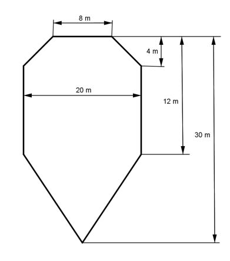

Aufgabe 29 Wie groß ist die Gesamtfläche des Daches? Wie lang ist die Dachrinne?

Aufgabe 30 Wie groß ist das Abdeckblech?  Es sind cm²
Aufgabe 31
Aufgabe 32 Ein Sender hat eine Reichweite von 65 km. Wie groß ist sein Sendegebiet? Es sind km²
Aufgabe 33

Aufgabe 34 Ein Leuchtturm hat eine Reichweite von 14 km. Er überstreichteinen Winkel von 90°. Wie groß ist die beleuchtete Fläche? km²
Aufgabe 35
Aufgabe 36 Ein runder Brunnen mit einem Radius von 3 m steht auf einem runden Platz mit einem Durchmesser von 60 m. Wie groß ist die zu pflasternde Fläche A? A = m²
Aufgabe 37 Ein Gärtner soll rund um einen Platz, der 180 m lang und 105 m breit ist, Bäume im Abstand von 15 m anpflanzen. Wie viele Bäume braucht er?
Aufgabe 38 Ein Bauherr soll seine Baugrube von 15 m Länge und 8 m Breite durch ein Band absichern. Wie viel m Band braucht er, wenn er es im Abstand von 2 m zur Grube anbringen will? Er braucht m Band.
Aufgabe 39 Für 162 Fahrzeuge steht ein rechteckiges Gelände von 55 m Länge und 39 m Breite zur Verfügung. Für die Zufahrtswege braucht man 450 m². Wie viel Platz ergibt sich für 1 Fahrzeug?
Aufgabe 40 Eine Bauer will seine kreisrunde Wiese umzäunen. Sie hat eine Fläche von 254,5 m². Wie lang muss der Zaun sein? Er muss m lang sein.
Aufgabe 41
Aufgabe 42 Ein Restgartengrundstück hat die Form eines Kreisausschnitts, mit einer Bogenlänge von 6 m und einem Radius von 4,5 m. Wie groß ist seine Fläche? Es sind m²
Aufgabe 43 Ein Bahngleis macht über einen Winkel von 35° einen 175 m langen Bogen. Welchen Durchmesser hat der Kreis, auf dem der Zug fährt?
Aufgabe 44 Für ein Spielfeld benötigt man 2 konzentrische Kreise, deren Radien sich wie 2:3 verhalten müssen. Wie verhalten sich deren Flächen? Sie verhalten sich wie :9